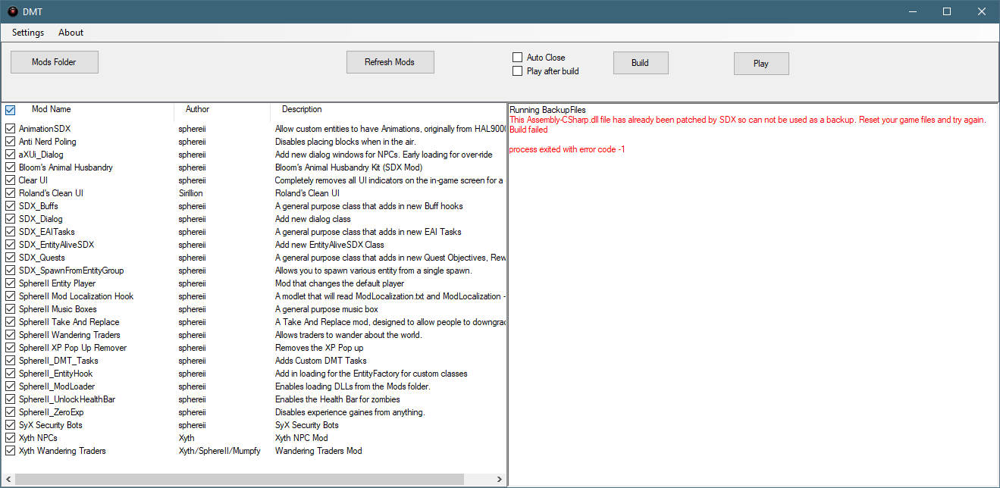

Q) I clicked on Build, and it gave me the following error! "This Assembly-CSharp.dll file has already been patched..."

A ) You will get this error if DMT has no back up file, and the game has already been modified by DMT ( or SDX ). Re-validate your game install through Steam.
Q ) I clicked on the Mods Folder button, and nothing happened!
A ) This usually means you did not set up your Mods folder through the Settings Menu.
Created with the Personal Edition of HelpNDoc: Generate Kindle eBooks with ease